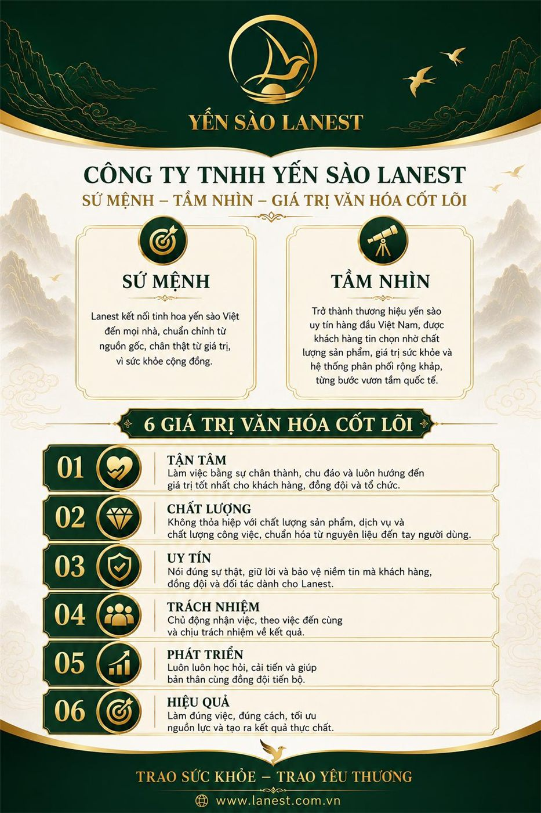
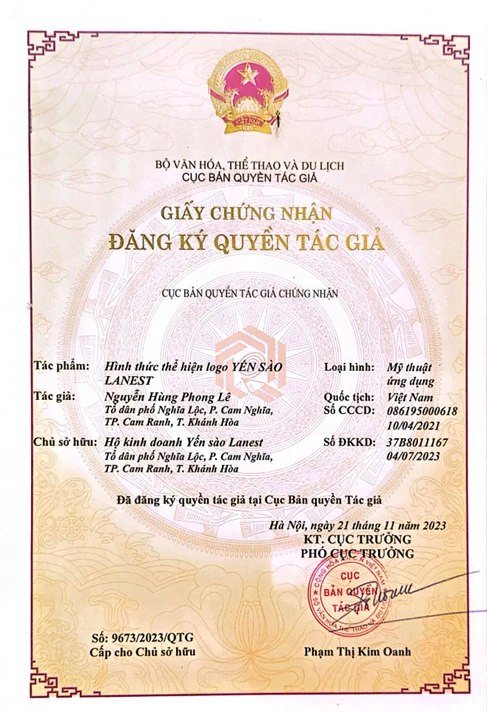

Thương Hiệu Yến Sào Uy Tín Để Hợp Tác: 6 Điều Cần Nhìn Trước Khi Bắt Tay
Yến Sào Lanest · Đăng ngày 01/11/2026

Chủ cửa hàng quà tặng, spa, nhà thuốc hay người bán online khi muốn thêm yến sào vào kệ hàng thường đứng trước một lựa chọn: nhập hàng không tên tuổi cho rẻ, hay chọn một thương hiệu yến sào uy tín để hợp tác lâu dài. Bài này không bàn chuyện giá, mà đi qua những điều giúp anh chị biết một thương hiệu có đủ "chỗ dựa" cho việc bán hàng của mình hay không.
Sứ mệnh, tầm nhìn và 6 giá trị cốt lõi của Công ty TNHH Yến Sào Lanest
1. Vì sao nên hợp tác với một thương hiệu, không chỉ một nguồn hàng?
Ngoài thị trường vẫn có loại hàng dân trong nghề gọi là "tem chung": hàng trôi nổi, không giấy tờ, không mã vạch, không đủ điều kiện lưu hành. Bán loại này, khi khách hỏi nguồn gốc thì người bán phải tự gánh. Hợp tác với một thương hiệu có pháp nhân, có hồ sơ sản phẩm, nghĩa là anh chị có người đứng sau từng hũ yến mình bán ra.
Người sáng lập Lanest kể một đại lý từng bán "tem chung" tìm tới Lanest chính vì lý do này: Lanest có đủ giấy tờ, mã vạch, còn hàng chị ấy đang bán thì không.
2. Thương hiệu có được bảo hộ, có nhận diện rõ ràng không?
Một thương hiệu nghiêm túc đầu tư vào tên tuổi của mình. Những điều anh chị có thể hỏi và xem tận mắt:
- Quyền tác giả logo: logo Yến Sào Lanest đã được cấp giấy chứng nhận quyền tác giả số 9673/2023/QTG.
- Giải thưởng bên thứ ba: Thương hiệu số 1 Việt Nam 2024 (Vietnam No.1 Brand Awards), danh hiệu "Sản phẩm – Dịch vụ tốt nhất vì người tiêu dùng 2024".
- Định hướng rõ ràng: sứ mệnh, tầm nhìn, giá trị cốt lõi được viết thành văn và áp dụng trong công ty, như tấm ảnh ở đầu bài.

Giấy chứng nhận quyền tác giả logo Yến Sào Lanest
3. Hồ sơ sản phẩm để anh chị trả lời khách
Khi khách hỏi "yến này có kiểm nghiệm không", người bán cần có giấy tờ để đưa ra ngay. Với Lanest, đó là:
| ISO 22000:2018 | Hệ thống quản lý an toàn thực phẩm, hiệu lực đến 23/09/2027 |
| Tự công bố sản phẩm | Nhiều sản phẩm có bản tự công bố kèm phiếu kiểm nghiệm đạt QCVN 6-2:2010/BYT |
| Mã vạch GS1 | Đăng ký với GS1 Việt Nam, hiệu lực đến 31/12/2027 |
| Hóa đơn | Xuất hóa đơn đầy đủ, giá đã gồm VAT 8% |
Chi tiết về ISO có trong bài chứng nhận ISO 22000 của Lanest.
4. Danh mục và mẫu mã: đủ để bán quanh năm
Một thương hiệu đáng hợp tác phải có hàng cho nhiều nhóm khách và nhiều dịp. Lanest hiện có:
- Yến hũ chưng sẵn 7g yến tươi với 14 vị, trong đó có vị cho trẻ em và vị ăn kiêng.
- Tổ yến chưng nguyên chất 100%, 1,5g tổ yến mỗi hũ, 3 vị: đường phèn, đông trùng hạ thảo, gừng.
- Yến tinh chế nhiều loại theo mức làm sạch và tỷ lệ sợi, cùng tổ yến thô.
- Hộp quà cho dịp lễ, Tết, biếu tặng.
Điểm Lanest tự đặt làm khác biệt là mẫu mã bắt mắt và thường xuyên làm mới, để người bán có hình ảnh mới mà giới thiệu với khách theo từng mùa. Xem cách chọn vị trong bài 14 vị yến chưng: chọn vị nào.
5. Thương hiệu có bảo vệ người hợp tác không?
Đây là điều nhiều người quên hỏi. Thương hiệu mạnh mà để mặc người bán phá giá lẫn nhau thì người chăm khách tử tế sẽ thua. Chính sách bán hàng của Lanest, công khai trên website, yêu cầu cộng tác viên, đại lý, nhà phân phối bán đúng giá niêm yết, cấm phá giá, cấm lôi kéo khách của nhau. Hàng lỗi do vận chuyển hoặc do nhà sản xuất được báo trong 15 ngày kể từ ngày nhận, kèm hình ảnh hoặc video lúc mở hàng. Về khách của người hợp tác, người sáng lập Lanest nói rõ:
"mình làm việc rất là uy tín mình không bao giờ đụng tới data khách hàng của đại lý ở bên dưới"
6. Muốn bán dưới tên riêng của mình?
Một số đơn vị muốn xây nhãn hiệu riêng. Lanest có nhận đóng hàng không tem để đối tác dán nhãn của mình. Trường hợp này nên trao đổi rõ từ đầu: sản phẩm mang nhãn mới thì hồ sơ công bố và mã vạch cho nhãn đó do ai lo, để hàng không rơi vào cảnh "tem chung" như mục 1.
Câu hỏi nên đặt khi gặp một thương hiệu yến sào
- Công ty tên gì, mã số doanh nghiệp bao nhiêu, logo có được bảo hộ không?
- Từng sản phẩm có bản tự công bố, phiếu kiểm nghiệm, mã vạch không?
- Có xuất hóa đơn đầy đủ không?
- Danh mục có đủ cho khách của mình (gia đình, trẻ em, người ăn kiêng, quà biếu) không?
- Có chính sách giữ giá, chống phá giá thành văn không?
- Hàng lỗi xử lý thế nào, trong bao lâu?
Nếu anh chị đang tìm hiểu cụ thể cách bắt đầu với Lanest, xem bài làm đại lý yến sào Lanest hoặc trang nhập yến làm đại lý.
Câu hỏi thường gặp
Cửa hàng nhỏ, spa có hợp tác với thương hiệu yến sào được không?
Được. Điều quan trọng là thương hiệu cung cấp được hồ sơ sản phẩm để anh chị trả lời khách, và có chính sách giữ giá để anh chị không phải cạnh tranh giá với người khác.
Lanest có gửi giấy tờ trước khi hợp tác không?
Có. Anh chị gọi 0258 6278 627 hoặc nhắn fanpage Yến Sào Lanest để được gửi chứng nhận, bản tự công bố và kết quả kiểm nghiệm.
Lanest có nhận làm hàng dán nhãn riêng không?
Có nhận đóng hàng không tem để đối tác dán nhãn riêng. Hồ sơ công bố và mã vạch cho nhãn mới cần trao đổi rõ khi bắt đầu.